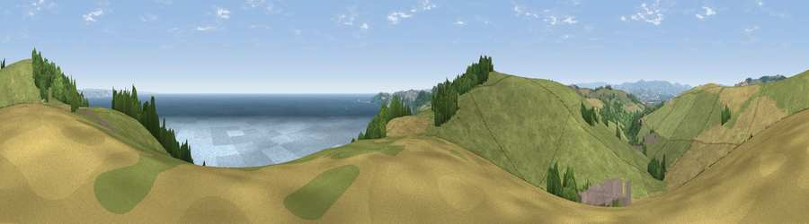

Viewpoint near Stokeinteignhead
#903 in England · top 1% of its area beats it · near StokeinteignheadWhere it is
The exact computed spot (SX 92975 70338). Click the marker for map links.
The view, rendered

A 360° render of this exact spot computed from the terrain model, tree cover and land cover — summer colours, afternoon light, calibrated against photographs of famous viewpoints. Real trees, hedges and buildings will differ in detail.
The panorama
Grey silhouette: terrain skyline in each direction (720 bearings, Earth curvature and refraction included). Dashed green: skyline with trees (+15 m) and buildings (+8 m) as obstacles. Blue strip: how far the ground is visible on each bearing.
Where the view opens
Wedge length = distance to the farthest visible ground on that bearing (vegetation-aware). Rings at 10, 25 and 50 km.
What fills the view
47% grassland · 34% water · 9% cropland · 8% woodland · 1% built-up
Angular shares of the visible panorama (visual magnitude), not map area. Landscape diversity 0.52 (0–1 Shannon).
Key numbers
More beautiful places nearby
The staircase of upgrades: each row has a higher view potential than everything closer. Driving times are estimates from straight-line distance, calibrated against real road routing — check an actual route before setting out.
| Place | Direction | Drive | Score |
|---|---|---|---|
| Viewpoint near Shaldon | NNE · 1 km | ~2 min | 83.8 |
| Viewpoint near Stokeinteignhead | SSW · 1 km | ~2 min | 84.1 |
| High Peak | NE · 23 km | ~38 min | 85.3 |
| Golden Cap | ENE · 52 km | ~74 min | 88.7 |
| The Knoll | ENE · 63 km | ~86 min | 91.0 |
50.52300, -3.51115 · source: screening · position refined by local search. Computed location — check access rights before visiting.